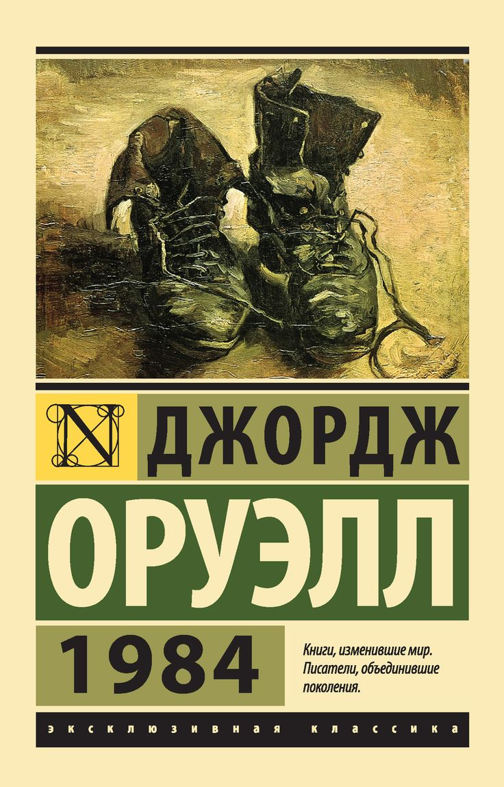

1984
Подробное содержание
Действие разворачивается в Лондоне, столице тоталитарного супергосударства Океания. Власть принадлежит Партии, возглавляемой Большим Братом. Главный герой Уинстон Смит работает в Министерстве правды, где его обязанность — переписывать историю в соответствии с текущей линией партии. Его жизнь подчинена жёсткому контролю: везде установлены телеэкраны‑«телекраны», которые не только транслируют пропаганду, но и следят за каждым движением.
Уинстон начинает тайный дневник — акт индивидуального бунта, который карается смертью. Он знакомится с Джулией, и их запретный роман даёт надежду на сохранение человечности. Вместе они ищут подпольное сопротивление, связываются с загадочным О’Брайеном, который кажется союзником, но на деле оказывается агентом Полиции мыслей. Уинстона арестовывают и подвергают пыткам в «Комнате 101», где его ломают, заставляя предать всё, что он любил, включая Джулию.
Роман завершается полным духовным уничтожением героя: он сидит в кафе, смотрит на портрет Большого Брата и понимает, что любит его. Океания победила, личность стёрта, свобода невозможна.
История создания
Оруэлл начал писать роман в 1946 году на шотландском острове Джура, будучи уже тяжело больным туберкулёзом. Первоначальное название было «Последний человек в Европе», но издатель предложил сменить его на «1984», поменяв местами последние цифры текущего года (1948). Книга задумывалась как сатира на тоталитарные режимы, особенно сталинский СССР, но Оруэлл подчёркивал, что предостерегает от любых форм государственного угнетения. Роман вышел в 1949 году и мгновенно вызвал бурную реакцию: одни называли его клеветой на социализм, другие — пророчеством. Именно из этой книги вошли в язык понятия «Большой брат», «новояз», «мыслепреступление» и «двоемыслие». Оруэлл умер через полгода после публикации, но его антиутопия остаётся важнейшим предупреждением для человечества.
← Вернуться к списку книг